World Domination (with Perl!)
I Could Rule The World If I Could Only Get The Parts
Steve Baker
Phoenix.pm
Let There Be Light
- So... You have a light...
- You want it to be on...
- ...and you want to use Perl to make that happen!
- How?
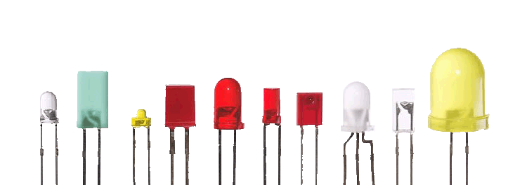
[any material that should appear in print but not on the slide]
Let There Be Robots Too!
- If you can turn on a light with Perl, what's to stop you from controlling anything else?
- Home Automation
- Robotics
- Data Gathering
- World Domination!
[any material that should appear in print but not on the slide]
Raspberry Pi
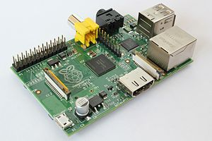
- ARM Processor (Broadcom 2835 System on a Chip)
- Linux
- Raspian (based on Debian)
- Occidentalis (based on Raspian)
- 700MHz (overclockable)
- 512MB RAM
- SD Card for storage
- $40
[any material that should appear in print but not on the slide]
Raspberry Pi
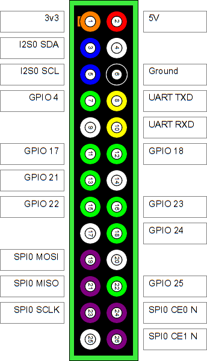
- GPIO Pins brought to connector on board
- Basic Serial Communications
- Pulse Width Modulation
- SPI
- I2C
[any material that should appear in print but not on the slide]
Occidentalis Linux
- Based on Raspian (Debian)
- Kernel modules for common electronic devices loaded
- I2C, SPI, 1-Wire support
- Convenience Features
- sshd upon boot
- Avahi daemon
- Real-Time Clock support
- Perl 5.14.2
- Raspian can do all this as well, but you have a lot more setup to do
[any material that should appear in print but not on the slide]
Python Considered Harmful
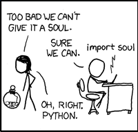
#!/usr/bin/python
import smbus
class Adafruit_I2C :
def __init__(self, address, bus=smbus.SMBus(0), debug=False):
self.address = address
self.bus = bus
self.debug = debug
def reverseByteOrder(self, data):
"Reverses the byte order of an int (16-bit) or long (32-bit) value"
# Courtesy Vishal Sapre
dstr = hex(data)[2:].replace('L','')
byteCount = len(dstr[::2])
val = 0
for i, n in enumerate(range(byteCount)):
d = data & 0xFF
val |= (d << (8 * (byteCount - i - 1)))
data >>= 8
return val
def write8(self, reg, value):
"Writes an 8-bit value to the specified register/address"
try:
self.bus.write_byte_data(self.address, reg, value)
if (self.debug):
print("I2C: Wrote 0x%02X to register 0x%02X" % (value, reg))
except IOError, err:
print "Error accessing 0x%02X: Check your I2C address" % self.address
return -1
def writeList(self, reg, list):
"Writes an array of bytes using I2C format"
try:
self.bus.write_i2c_block_data(self.address, reg, list)
except IOError, err:
print "Error accessing 0x%02X: Check your I2C address" % self.address
return -1
def readU8(self, reg):
"Read an unsigned byte from the I2C device"
try:
result = self.bus.read_byte_data(self.address, reg)
if (self.debug):
print "I2C: Device 0x%02X returned 0x%02X from reg 0x%02X" % (self.address, result & 0xFF, reg)
return result
except IOError, err:
print "Error accessing 0x%02X: Check your I2C address" % self.address
return -1
def readS8(self, reg):
"Reads a signed byte from the I2C device"
try:
result = self.bus.read_byte_data(self.address, reg)
if (self.debug):
print "I2C: Device 0x%02X returned 0x%02X from reg 0x%02X" % (self.address, result & 0xFF, reg)
if (result > 127):
return result - 256
else:
return result
except IOError, err:
print "Error accessing 0x%02X: Check your I2C address" % self.address
return -1
[any material that should appear in print but not on the slide]
Setup: Occidentalis
[any material that should appear in print but not on the slide]
Setup: Upgrade gcc
- sudo apt-get update
- sudo apt-get install gcc-4.7
[any material that should appear in print but not on the slide]
Setup: bcm2835 Library
- wget http://www.open.com.au/mikem/bcm2835/bcm2835-1.14.tar.gz
- tar xzvf bcm2835-1.14.tar.gz
- cd bcm2835-1.14
- ./configure
- make
- sudo make check
- sudo make install
[any material that should appear in print but not on the slide]
Setup: Install Device::BCM2835
- wget http://search.cpan.org/CPAN/authors/id/M/MI/MIKEM/Device-BCM2835-1.3.tar.gz
- cd Device-BCM2835-1.3
- perl Makefile.PL
- gcc-4.7 -shared -L/usr/local/lib -fstack-protector BCM2835.o -o blib/arch/auto/Device/BCM2835/BCM2835.so -lbcm2835 -lrt
- make test
- sudo make install
[any material that should appear in print but not on the slide]
Intro to Device::BCM2835
- Wrapper around the bcm2835 library
- Provides functions to read and modify the state of GPIO pins
- This is your basic method of communication with the outside world
- A major limitation: no interrupts. You must poll the pins and watch for changes.
[any material that should appear in print but not on the slide]
Intro to Device::BCM2835
- GPIO Register Access Functions
- gpio_fsel - Set the pin configuration
- gpio_lev - Get the logic level of a pin (high or low)
- gpio_set - Change the logic level of a pin to high
- gpio_clr - Change the logic level of a pin to low
- gpio_write - Change the logic level of a pin
- spi_begin - Begin SPI operations
- spi_transfern - Transfer bytes to and from the currently select SPI device
- spi_end - End SPI operations
[any material that should appear in print but not on the slide]
Power Considerations
[any material that should appear in print but not on the slide]
Connecting an LED
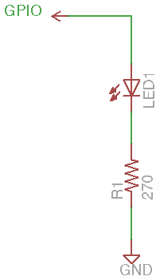
[any material that should appear in print but not on the slide]
Connecting a Button
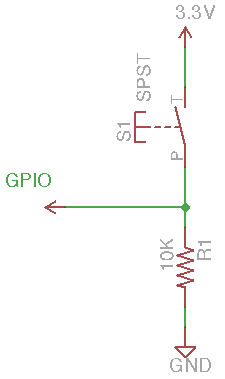
[any material that should appear in print but not on the slide]
Finally Some Perl Code!
(About freakin' time...)
[any material that should appear in print but not on the slide]
Our Demonstration Circuit
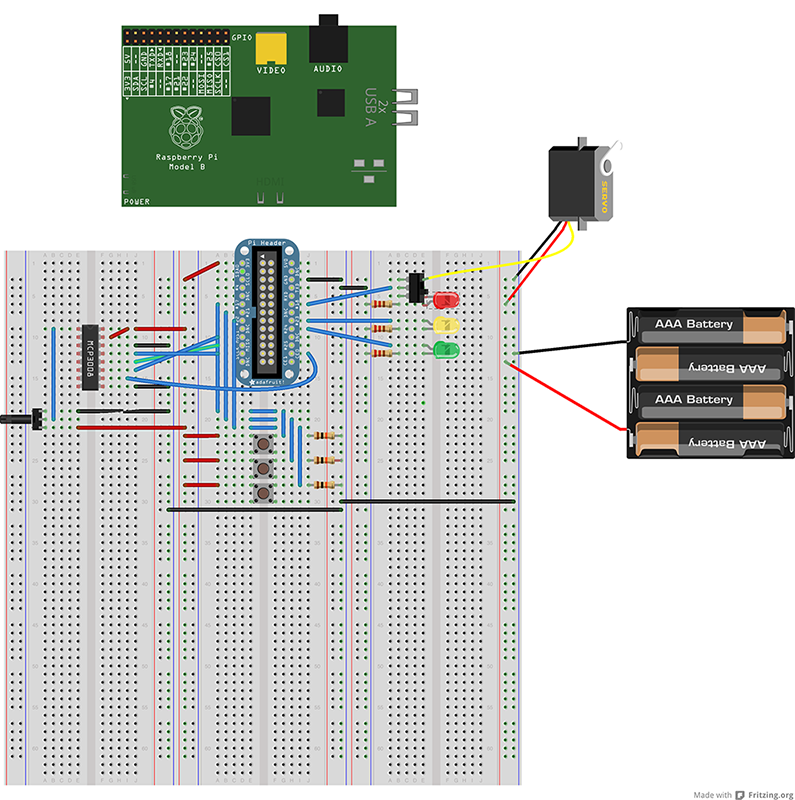
[any material that should appear in print but not on the slide]
Our Demonstration Circuit
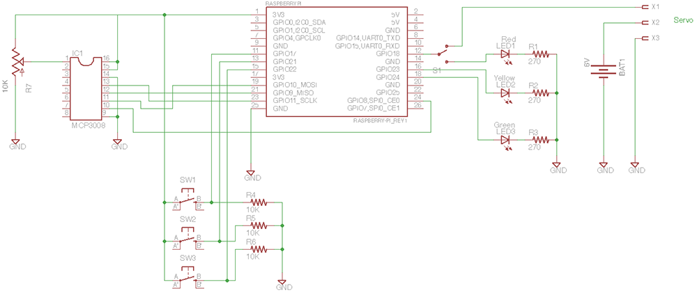
[any material that should appear in print but not on the slide]
Hello World
A couple of simple programs to demonstrate the switches and LEDs
[any material that should appear in print but not on the slide]
Pulse Width Modulation
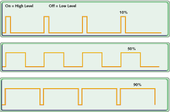
- Pins are digital, not analog
- So how do we vary the brightness of the bulb?
- Hint: Look at the title of this slide...
[any material that should appear in print but not on the slide]
PWM Classes
- Base class
- PWM class
- Servo class
[any material that should appear in print but not on the slide]
LED Beat
Using Pulse Width Modulation to make an LED beat
[any material that should appear in print but not on the slide]
Manual Dimmer Control
- It would be nice to vary the brightness of the bulb with a knob
- But the pins are still digital only
- How do we deal with a continuously variable quantity in the world of 1s and 0s?
[any material that should appear in print but not on the slide]
Analog to Digital Conversion
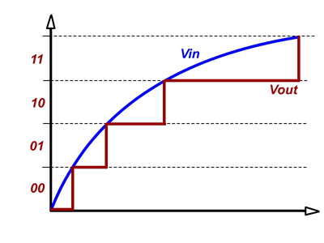
- Convert a voltage level to a stream of bits
- I am using an MCP3008
- 8 input channels (I'm only using one)
- 10-bit resolution
- Controlled through SPI
[any material that should appear in print but not on the slide]
Processing SPI
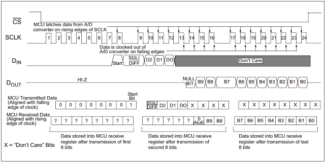
0000 0001 1000 0000 0000 0000
[any material that should appear in print but not on the slide]
MCP3008 Class
More perl code!
[any material that should appear in print but not on the slide]
An LED Dimmer Knob
Even more perl code!!!
And another demo!
[any material that should appear in print but not on the slide]
Making Your Robot Walk
[any material that should appear in print but not on the slide]
Resources
Places from which I Stole^H^H^H^H^HDerived Inspiration
[any material that should appear in print but not on the slide]
Q & (hopefully) A
[any material that should appear in print but not on the slide]